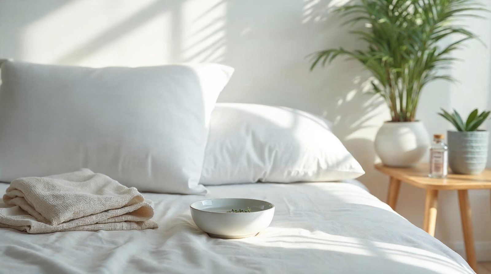
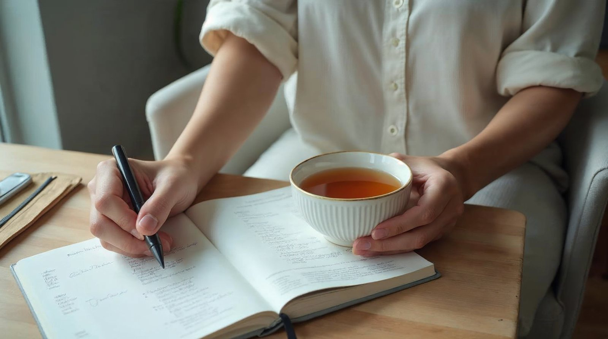
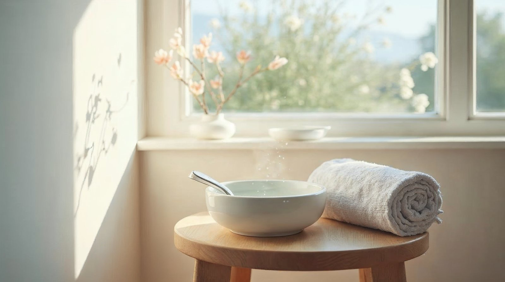
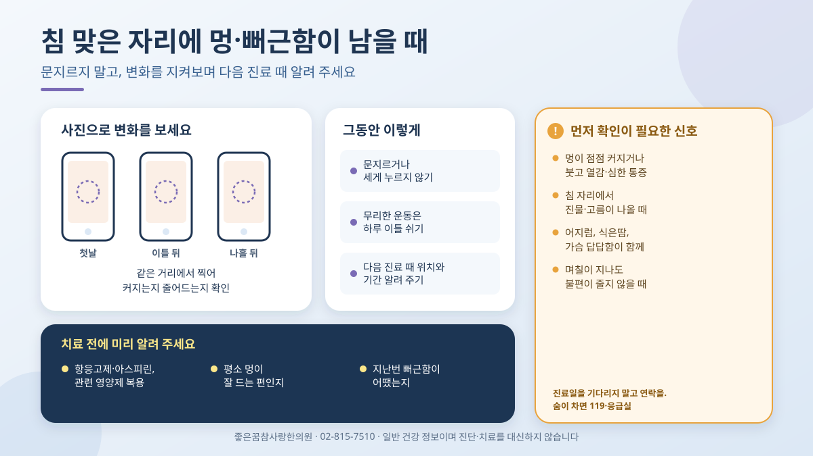

이종호 한의사 감수좋은꿈참사랑한의원 대표원장 (한의사 면허번호 19769)발행 2026-11-23 · 수정 2026-11-26
이 글의 차례
- 왜 이런 반응이 생길 수 있나요
- 멍과 뻐근함은 어떻게 다른가요?
- 왜 같은 치료에도 날마다 반응이 다를까요
- 이럴 때는 걱정을 조금 내려놓으셔도 됩니다
- 집에서 덜 불편하게 지내려면 어떻게 하나요?
- 멍이 신경 쓰이는 분께 드리는 말씀
- 다시 오셨을 때 저는 이렇게 여쭙니다
- 자주 하는 오해
- 예를 들면 이런 경우입니다
- 멍이 잘 드는 체질이라면 무엇을 알려 주실까요?
- 뻐근함이 오래가는 분은 어떤 경우가 많을까요?
- 다음 치료 날짜는 어떻게 정하나요?
- 먼저 이렇게 여쭙니다
- 일상에서 먼저 해 볼 수 있는 것
- 한의원에서 함께 살필 수 있는 경우
- 시간에 따라 이렇게 살펴보세요
- 부위에 따라 반응이 다르게 느껴질 수 있나요?
- 다른 치료를 함께 받은 날의 반응은요?
- 걱정이 커서 치료가 망설여진다면요?
- 스스로 점검해 보세요
- 사진은 이렇게 남겨 주세요
- 이렇게 기록해 오시면 상담이 쉬워집니다
- 이런 증상은 먼저 확인이 필요합니다
- 멍과 뻐근함에 대해 제가 드리고 싶은 말씀
- 관련 글
침을 맞은 자리에 작은 멍이 들거나 치료한 근육이 하루 이틀 뻐근한 것은 일시적으로 생길 수 있는 반응이며, 대개 시간이 지나면서 줄어듭니다. 다만 멍이 점점 커지거나 붓고 열감이 생기거나, 며칠이 지나도 불편이 그대로라면 한의원에 알려 상태를 확인해야 합니다. 약을 드시는 분은 치료 전에 미리 알려 주세요.
왜 이런 반응이 생길 수 있나요
- 침이 지나가는 자리의 아주 작은 혈관이 자극되면 피부 아래에 작은 멍이 보일 수 있습니다.
- 긴장된 근육을 치료한 뒤 그 부위가 묵직하거나 뻐근하게 느껴지는 분이 있습니다.
- 항응고제나 항혈소판제를 드시거나 멍이 잘 드는 체질이면 멍이 더 쉽게 생길 수 있습니다.
- 사람마다 피부와 근육의 반응이 달라 같은 치료에도 느낌이 다릅니다.
멍과 뻐근함은 어떻게 다른가요?
멍은 피부 아래 아주 작은 혈관에서 피가 조금 새어 나와 색으로 보이는 것이고, 뻐근함은 치료한 근육이 묵직하거나 당기듯 느껴지는 감각입니다. 둘이 함께 오기도 하지만 따로 오는 경우도 많습니다.
멍은 눈에 보이니 걱정이 크지만 누르지 않으면 아프지 않은 경우가 많고, 뻐근함은 눈에 보이지 않아도 움직일 때 신경이 쓰입니다. 그래서 저는 다시 오신 분께 "보이는 자국"과 "느껴지는 불편"을 나눠서 여쭙습니다.
왜 같은 치료에도 날마다 반응이 다를까요
같은 자리에 같은 방식으로 치료해도 어떤 날은 아무렇지 않고, 어떤 날은 작은 멍이 남습니다. 침이 지나가는 길에 있는 아주 가는 혈관의 위치가 사람마다, 자리마다 조금씩 다르기 때문입니다.
몸이 지쳐 있거나 잠을 못 잔 날, 근육이 유난히 굳어 있던 날에는 치료 뒤 뻐근함이 더 크게 느껴질 수 있습니다. 진통제나 피를 묽게 하는 약을 새로 드시기 시작한 경우에도 반응이 달라질 수 있어 약이 바뀌면 알려 주세요.
이럴 때는 걱정을 조금 내려놓으셔도 됩니다
- 동전보다 작은 멍이 하나 생기고, 누르지 않으면 아프지 않다
- 멍 색이 며칠에 걸쳐 푸른빛에서 누런빛으로 바뀌며 옅어진다
- 뻐근함이 치료 다음 날 가장 크고, 그 뒤로 조금씩 줄어든다
- 일상 동작은 할 수 있고, 특정 동작에서만 묵직하다
이런 흐름이라면 대개 시간이 지나며 가라앉는 경우가 많습니다. 사진을 남겨 두고, 다음 진료 때 보여 주시면 됩니다.
집에서 덜 불편하게 지내려면 어떻게 하나요?
- 멍이 생긴 첫날은 그 자리를 꽉 끼는 옷이나 가방끈이 누르지 않도록 해 주세요.
- 뻐근한 근육은 가볍게 움직여 주는 편이 편할 수 있습니다. 아프지 않은 범위에서 천천히 돌리고 펴 보세요.
- 뜨거운 탕에 오래 들어가거나 세게 마사지하는 일은 하루 이틀 미뤄 주세요.
- 진통 연고나 파스를 쓰고 싶다면 침 자리를 피해 붙이고, 피부가 붉어지면 떼어 주세요.
멍이 신경 쓰이는 분께 드리는 말씀
얼굴 가까운 곳이나 팔처럼 드러나는 자리의 멍은 생활에 불편을 줍니다. 결혼식이나 면접, 사진 촬영처럼 중요한 일정이 가까우면 치료 전에 꼭 말씀해 주세요. 그 기간에는 드러나는 자리를 피하거나 자극을 줄이는 쪽으로 계획을 세웁니다.
예전에 멍 때문에 치료가 꺼려졌던 분도 계십니다. 그런 마음이 있다면 숨기지 말고 이야기해 주세요. 침의 굵기와 깊이, 자리 수를 조정하거나, 상태에 따라 추나나 온열 물리치료처럼 다른 방법을 먼저 상의할 수 있습니다.
다시 오셨을 때 저는 이렇게 여쭙니다
- 멍이 생겼다면 어느 침 자리였는지, 며칠 만에 옅어졌는지
- 뻐근함이 언제 가장 컸고 언제쯤 편해졌는지
- 그사이 운동이나 무거운 일을 한 날이 있었는지
- 다음 치료에서 피하고 싶은 자리나 걱정되는 점이 있는지
이 이야기를 바탕으로 같은 부위를 다시 치료할지, 자리를 옮길지, 자극을 낮출지를 함께 정합니다.
자주 하는 오해
- 멍이 들었으니 치료가 잘못됐다고 여기기 쉽지만, 작은 멍은 일시적으로 생길 수 있는 반응이고 대개 시간이 지나며 옅어집니다. 다만 커지거나 붓는다면 알려 주세요.
- 뻐근할수록 치료가 잘 된 것이라고 생각하기 쉽지만, 뻐근함의 정도로 치료 결과를 판단하지는 않습니다. 불편하면 자극을 줄여 조정할 수 있습니다.
- 멍든 자리를 세게 주무르면 빨리 풀린다고 여기기 쉽지만, 문지르면 오히려 자극이 커질 수 있습니다.
- 멍이 잘 드니 침 치료를 받을 수 없다고 생각하기 쉽지만, 미리 알려 주시면 위치와 자극을 조정하는 방법을 함께 찾습니다.

예를 들면 이런 경우입니다
- 예를 들어 반팔 셔츠를 입고 출근하는 직장인이 팔에 멍이 신경 쓰인다면, 치료 전에 말씀해 주시면 눈에 띄는 자리를 고려해 위치를 함께 정합니다.
- 예를 들어 혈액을 묽게 하는 약을 드시는 어르신이라면, 약 이름을 먼저 확인하고 자극을 낮추며, 치료 뒤 침 자리를 조금 더 오래 눌러 지혈을 확인합니다.
- 예를 들어 치료받은 다음 날 아이를 안다가 어깨가 더 뻐근하게 느껴진 육아 중인 분이라면, 다음 진료 때 그 상황을 알려 주시면 치료 부위와 생활 동작을 함께 살핍니다.
멍이 잘 드는 체질이라면 무엇을 알려 주실까요?
평소 부딪힌 기억이 없는데도 다리나 팔에 멍이 자주 보이는 분, 이를 닦을 때 잇몸에서 피가 잘 나는 분, 작은 상처에도 피가 오래 나는 분은 치료 전에 말씀해 주세요.
이런 경향이 있다면 침의 깊이와 개수를 조정하고, 치료 뒤 침 자리를 더 오래 눌러 지혈을 확인합니다. 최근 이런 경향이 갑자기 늘었다면 병원에서 피검사를 받아 보시도록 권하기도 합니다.
뻐근함이 오래가는 분은 어떤 경우가 많을까요?
오랫동안 굳어 있던 근육을 처음 치료했을 때, 치료 직후 무거운 일을 했을 때, 잠이 크게 부족했을 때 뻐근함이 하루 이틀보다 길게 남는 경우가 있습니다.
처음 침 치료를 받는 분도 낯선 자극에 몸이 더 크게 반응할 수 있습니다. 이런 경우에는 다음 치료에서 자극을 낮춰 시작하고, 몸이 익숙해지는 정도를 보며 조금씩 맞춥니다.
다음 치료 날짜는 어떻게 정하나요?
멍이나 뻐근함이 아직 남아 있는데 다음 진료일이 다가왔다면, 그대로 오셔도 됩니다. 그날 상태를 보고 멍이 있는 자리는 피하거나, 뻐근함이 남은 부위는 자극을 줄여 치료합니다.
다만 불편이 커지고 있다면 날짜를 기다리지 말고 먼저 연락해 주세요. 상태를 들은 뒤 앞당겨 오시도록 할지, 조금 더 지켜볼지 함께 정합니다.
먼저 이렇게 여쭙니다
- 멍이나 뻐근함이 어느 자리에, 언제부터 있었나요?
- 크기가 점점 커지나요, 줄어드나요?
- 붓기, 열감, 진물이 있나요?
- 항응고제나 아스피린, 관련 영양제를 드시나요?

일상에서 먼저 해 볼 수 있는 것
- 멍든 자리를 문지르거나 세게 누르지 않기
- 멍의 크기를 휴대폰으로 같은 거리에서 찍어 변화 보기
- 뻐근한 부위는 무리한 운동을 하루 이틀 쉬어 가기
- 다음 진료 때 멍이 생긴 위치와 기간을 알려 주기
한의원에서 함께 살필 수 있는 경우
- 멍이 잘 드는 체질이거나 약을 복용 중이라면 치료 전에 알려 주세요. 방법을 조정할 수 있습니다.
- 치료 뒤 뻐근함이 불편하다면 치료 자극의 정도를 함께 조정합니다.
- 침 자리 관리 방법을 안내받고 궁금한 점을 물어볼 수 있습니다.
좋은꿈참사랑한의원에서는 다음 진료 때 멍과 뻐근함이 어땠는지부터 여쭙고, 상태에 맞춰 침의 위치와 자극, 다른 방법을 함께 조정합니다. 불편이 이어지면 진료일을 기다리지 말고 연락해 주세요.
첫 방문에는 복용 중인 약과 영양제, 멍이 잘 드는 편인지를 알려 주시면 진료실에서 함께 확인합니다. 불편한 곳과 함께 잠, 소화, 배변, 몸의 온기를 여쭙고 진맥을 짚은 뒤, 필요하다고 판단되면 손으로 살피는 진찰이나 초음파로 근육과 힘줄 상태를 확인합니다.
치료가 끝나면 침 자리를 살펴보고, 귀가 뒤 멍이나 뻐근함이 생기면 어떻게 지켜볼지 안내해 드립니다.

시간에 따라 이렇게 살펴보세요
- 치료 당일: 침 자리가 살짝 붉거나 작은 멍이 보일 수 있습니다. 문지르지 말고 사진을 한 장 찍어 두세요.
- 2~3일째: 뻐근함은 대개 이 무렵 줄어듭니다. 멍은 색이 푸르거나 누렇게 바뀌며 옅어지는 경우가 많습니다.
- 1~2주: 작은 멍은 이 사이에 거의 옅어지는 경우가 많습니다. 처음 사진과 비교해 크기가 줄었는지 보세요.
- 어느 때든 멍이 커지거나 붓고 열감, 진물이 생기면 지켜보지 말고 바로 연락해 주세요.
부위에 따라 반응이 다르게 느껴질 수 있나요?
목과 어깨처럼 근육이 두껍고 자주 긴장하는 부위는 치료 뒤 뻐근함을 더 또렷하게 느끼는 분이 많습니다. 손목이나 발목 주변처럼 피부가 얇은 곳은 뻐근함은 적어도 작은 멍이 눈에 더 잘 띌 수 있습니다.
허리나 엉덩이처럼 깊은 근육을 치료한 날에는 앉았다 일어설 때 묵직함이 느껴지기도 합니다. 이런 차이는 부위의 특성에서 오는 경우가 많아, 어느 자리에서 어떤 느낌이 있었는지 나눠서 알려 주시면 다음 치료에 반영하기 쉽습니다.
다른 치료를 함께 받은 날의 반응은요?
같은 날 침과 함께 추나나 체외충격파를 받으셨다면, 그 뒤의 뻐근함이 어느 치료에서 온 것인지 헷갈릴 수 있습니다. 이럴 때는 어느 부위가, 어떤 동작에서 불편한지를 알려 주시면 됩니다.
저는 그날 받으신 치료의 순서와 부위를 기록해 두고 있어, 말씀을 들으면 어느 쪽을 조정할지 함께 살펴볼 수 있습니다. 혼자 원인을 정하려 애쓰지 않으셔도 됩니다.
걱정이 커서 치료가 망설여진다면요?
예전에 멍이나 뻐근함 때문에 놀란 경험이 있으면, 다음 치료가 부담스럽게 느껴질 수 있습니다. 그 마음을 그대로 말씀해 주세요. 치료를 처음부터 다시 설명드리고, 자극을 낮춘 방법부터 함께 시작할 수 있습니다.
스스로 점검해 보세요
- 평소 작은 충격에도 멍이 잘 드는 편이다
- 항응고제, 항혈소판제, 아스피린을 먹고 있다
- 오메가3 같은 영양제를 매일 챙겨 먹는다
- 예전에 침 치료 뒤 뻐근함이 사흘 넘게 간 적이 있다
- 멍이 생긴 뒤 크기가 줄지 않고 오히려 커졌다
- 침 자리 주변이 붓거나 따뜻하게 느껴진다
앞의 네 가지는 치료 전에 알려 주시면 되고, 뒤의 두 가지는 바로 연락해 주세요. 작은 멍은 1~2주에 걸쳐 색이 옅어지는지 지켜보시고, 뻐근함이 사흘이 지나도 줄지 않거나 점점 심해지면 02-815-7510으로 연락해 주세요.
사진은 이렇게 남겨 주세요
멍은 조명에 따라 색이 달라 보여, 같은 장소와 같은 조명에서 찍어야 비교가 됩니다. 처음 발견한 날 한 장, 이틀 뒤 한 장, 일주일쯤 뒤 한 장이면 충분합니다.
크기를 비교하기 쉽도록 손가락 한 마디나 동전을 옆에 두고 찍어 주세요. 사진 아래에 그날 누르면 아픈지, 뻐근함은 어느 정도인지 짧게 메모해 두시면 진료실에서 보여 주실 때 설명이 훨씬 쉬워집니다.
날짜가 함께 남는 휴대전화 사진첩을 쓰시면 따로 날짜를 적지 않아도 됩니다.
이렇게 기록해 오시면 상담이 쉬워집니다
- 멍이나 뻐근함이 생긴 위치와 날짜
- 크기 변화를 찍은 사진
- 함께 나타난 다른 증상(붓기, 열감, 어지럼)
- 복용 중인 약과 영양제
- 예전에 다른 곳에서 침이나 주사를 맞은 뒤 멍이 오래갔던 경험
- 치료 뒤 뻐근함이 심해졌던 동작이나 자세(아이 안기, 오래 앉기 등)
멍이나 뻐근함이 생겼다고 해서 치료를 중단해야 하는 것은 아닙니다. 다음 진료 때 상태를 함께 보고 부위와 자극을 조정해 이어 갈 수 있습니다. 걱정되는 점은 기록과 사진으로 남겨 두셨다가 편하게 보여 주세요. 기록이 있으면 다음 치료 계획을 세우기가 훨씬 쉬워집니다.
이런 증상은 먼저 확인이 필요합니다
- 멍이 점점 커지거나 붓고 뜨거워지는 경우, 열이 나거나 심한 통증이 생기는 경우
- 침 자리에서 진물이나 고름이 나오는 경우
이런 신호가 있으면 한의원보다 가까운 병원이나 응급실을 먼저 찾으세요.
멍과 뻐근함에 대해 제가 드리고 싶은 말씀
침 치료 뒤의 작은 멍이나 뻐근함은 많은 분이 한 번쯤 겪는 일이고, 대부분은 시간이 지나며 가라앉습니다. 그렇다고 해서 참고 넘기셔야 하는 것은 아닙니다. 불편했던 점을 말씀해 주시면 다음 치료를 그만큼 편하게 맞출 수 있습니다.
걱정되는 모습이 보이면 혼자 고민하지 마시고 사진과 함께 연락해 주세요. 직접 보고 확인하는 것이 가장 마음 편한 방법입니다. 다음 진료에서 지난번 반응을 묻는 것도 같은 이유입니다.
관련 글

여쭙는 것
- 멍이나 뻐근함이 어느 자리에, 언제부터 있었나요?
- 크기가 점점 커지나요, 줄어드나요?
- 붓기, 열감, 진물이 있나요?
생활에서 해 볼 것
- 멍든 자리를 문지르거나 세게 누르지 않기
- 멍의 크기를 휴대폰으로 같은 거리에서 찍어 변화 보기
- 뻐근한 부위는 무리한 운동을 하루 이틀 쉬어 가기
한의원에서 함께 살필 것
- 멍이 잘 드는 체질이거나 약을 복용 중이라면 치료 전에 알려 주세요. 방법을 조정할…
- 치료 뒤 뻐근함이 불편하다면 치료 자극의 정도를 함께 조정합니다.
- 침 자리 관리 방법을 안내받고 궁금한 점을 물어볼 수 있습니다.
먼저 확인이 필요한 신호
- 멍이 점점 커지거나 붓고 뜨거워지는 경우, 열이 나거나 심한 통증이 생기는 경우
- 침 자리에서 진물이나 고름이 나오는 경우
한눈에 보는 표
| 구분 | 핵심 |
|---|---|
| 여쭙는 것 | 멍이나 뻐근함이 어느 자리에, 언제부터 있었나요? 크기가 점점 커지나요, 줄어드나요? |
| 생활에서 해 볼 것 | 멍든 자리를 문지르거나 세게 누르지 않기 멍의 크기를 휴대폰으로 같은 거리에서 찍어 변화 보기 |
| 한의원에서 함께 살필 것 | 멍이 잘 드는 체질이거나 약을 복용 중이라면 치료 전에 알려 주세요. 방법을 조정할 수 있습니다. 치료 뒤 뻐근함이 불편하다면 치료 자극의 정도를 함께 조정합니다. |
| 먼저 확인이 필요한 신호 | 멍이 점점 커지거나 붓고 뜨거워지는 경우, 열이 나거나 심한 통증이 생기는 경우 침 자리에서 진물이나 고름이 나오는 경우 |
자주 묻는 질문
멍은 얼마나 지나면 사라지나요?
사람마다 다르며 지켜보면서 줄어드는지 확인하는 것이 좋습니다. 걱정되면 한의원에 문의하세요.
뻐근함이 있으면 마사지를 해도 되나요?
문지르거나 세게 누르는 것은 피하시고 안내를 받으세요.
멍이 든 부위는 다음 치료 때 피하나요?
상태를 보고 위치와 방법을 조정합니다.
좋은꿈참사랑한의원은 재진 때 지난번 이야기부터 이어서 여쭙니다. 진료시간과 예약은 오시는 길에서 확인하세요.
어디서 상담받을 수 있나요?
좋은꿈참사랑한의원은 서울 동작구 만양로2길 2 신성빌딩 3층·5층(서울 동작구 상도동, 7호선 상도역 3번 출구 근처)에 있습니다. 한의사 3명(이종호 대표원장, 조영기 수석진료원장, 정원영 진료원장)이 진료합니다. 진료시간은 평일 09:30~20:00(점심 13:00~14:00), 토·일·공휴일 09:30~15:00이며, 방문 전 전화로 확인을 권합니다. 예약은 네이버 예약, 카카오톡 상담, 전화 02-815-7510로 받습니다.
이 글은 일반적인 건강 정보이며 개인의 진단이나 치료를 대신하지 않습니다. 증상이 있거나 복용 중인 약이 있다면 진료를 통해 확인하세요. 치료 효과는 개인마다 다를 수 있습니다.
작성 기준: 일반적으로 알려져 있는 건강 정보를 참고해 정리했습니다(대표원장 감수). 증상 기록은 1~2주 동안 하루 1회, 비슷한 시간에 적어 오시면 지난 상태와 비교하기 쉽습니다.